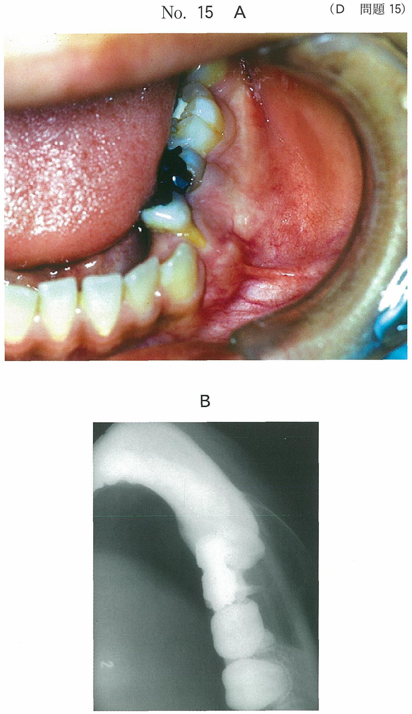
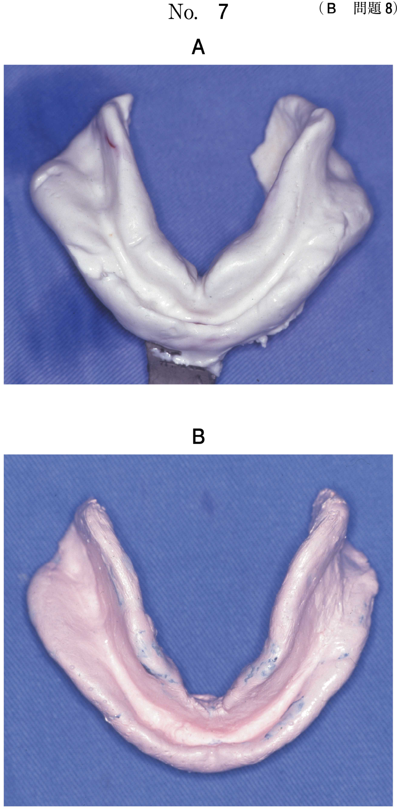

レジンインレー
I. 間接法（レジンインレー）の特徴
- 重合収縮は窩洞外で完了 → 接着界面への悪影響がない
- 隣接面形態・接触点の回復が確実にできる
直接法との比較
| 項目 | 間接法（インレー） | 直接法（CR充填） |
|---|---|---|
| 重合収縮 | 窩洞外で完了 | 窩洞内で起こる |
| 隣接面形態 | 確実に回復可能 | 困難な場合あり |
| 仕上げ研磨 | 確実にできる | 部位により困難 |
| 接着一体化 | セメント層が介在 | 優れる |
| 健全歯質削除 | 多い | 少ない |
35歳の女性。下顎左側第二小臼歯が欠けたことを主訴として来院した。「5は4年前に治療し、良好に経過していたが、 3日前に一部が欠けたという。コンポジットレジンインレー修復を行うこととした。初診時の口腔内写真（別冊No.19A）とエックス写真（別冊No.19B）とを別に示す。
間接法を選択した利点はどれか。2つ選べ。


b 歯髄刺激の軽減
c 歯肉排除が不要
d 重合収縮の低減
e 隣接面部の形態回復
【解説】間接法の利点は、重合収縮が窩洞外で完了すること（d）と、隣接面形態の確実な回復（e）。aの歯質強化やbの歯髄刺激軽減は間接法の利点ではない。cは誤りで、印象採得のために歯肉排除が必要。
II. 窩洞形態の特徴
- 線角・点角を丸く仕上げる（凸隅角部の曲面化）
- 窩縁斜面を付与しない（ノンベベル）
- 箱形の保持形態は不要（接着により維持）
窩洞形態の要点
| 形態 | レジンインレー | 理由 |
|---|---|---|
| 保持形態 | 箱形不要 | 接着により維持 |
| 抵抗形態 | 線角・点角を丸く | 応力集中回避・健全歯質保存 |
| 便宜形態 | 外開きを強め | メタルインレーより大きく |
| 窩縁形態 | ノンベベル | 窩縁斜面を付与しない |
50歳の女性。下顎右側第一小臼歯修復物の破折を主訴として来院した。2日前に硬いものを嚙んだときに破折したという。エアーで一過性の疼痛を認める。患者は同じ材料での修復を希望している。間接修復を行うこととした。初診時の口腔内写真（別冊No.15A）とエックス線写真（別冊No.15B）を別に示す。
窩洞形成で留意すべきなのはどれか。1つ選べ。


b 窩縁斜面の付与
c 舌側咬頭の削除
d 凸隅角部の曲面化
e アンダーカットの付与
【解説】レジンインレー窩洞では凸隅角部の曲面化（線角・点角を丸く仕上げる）が重要。応力集中を避け、健全歯質の保存にもつながる。aの保持溝やeのアンダーカットは接着修復では不要。bの窩縁斜面はノンベベルが原則。
III. レジンコーティング
- 象牙質・歯髄複合体の保護
- レジンセメントの接着性向上
- 副次的効果：アンダーカットの排除（ブロックアウト）
レジンコーティングとは、窩洞形成後に露出象牙質面を接着性レジンで被覆する処理である。
レジンコーティングの効果
- 辺縁封鎖性・窩壁適合性の向上
- 接着性レジンセメントの象牙質に対する接着性の向上
- 象牙質・歯髄複合体の保護（樹脂含浸層とコーティング層の形成）
- 副次的効果：アンダーカットの排除（ブロックアウト）
※コーティング後のレジン表面には未重合層が残存するため、エタノール綿球などで清拭除去が必要。
インレー窩洞にレジンコーティングを行う目的はどれか。2つ選べ。
b 象牙質と歯髄の保護
c 遊離エナメル質の破折防止
d アンダーカット部の埋め立て
e レジンセメントの接着性の向上
【解説】レジンコーティングの主目的は象牙質・歯髄の保護（b）とレジンセメントの接着性向上（e）。dのアンダーカット埋め立ては副次的効果であり、主目的ではない。aの歯髄鎮静やcの遊離エナメル質破折防止は目的ではない。
IV. インレー内面処理と装着
- 内面処理：サンドブラスト処理 + シランカップリング剤
- 装着：隣接面接触点の調整後に接着操作
- 余剰セメント：タックキュア（仮重合）して除去
インレー内面処理
| 処理 | 目的 |
|---|---|
| サンドブラスト処理 | 表面粗造化による機械的嵌合 |
| シランカップリング剤（γ-MPTS） | 無機フィラーとレジンセメントの化学的結合 |
レジンセメントとの接着に有効なコンポジットレジンインレー内面処理はどれか。2つ選べ。
b サンドブラスト処理
c ハイドロキノン塗布
d 次亜塩素酸ナトリウム塗布
e シランカップリング剤塗布
【解説】レジンインレー内面処理はサンドブラスト処理（b）とシランカップリング剤塗布（e）。aのスズ電析は金属の接着処理。cのハイドロキノンは重合禁止剤。dの次亜塩素酸ナトリウムは消毒薬。
装着操作のポイント
| 操作 | 適否 | 理由 |
|---|---|---|
| 接触点調整後に接着 | ○ | 装着後の調整は接着界面を損傷 |
| タックキュアで余剰セメント除去 | ○ | 仮重合でゲル化し除去しやすい |
| オキシドールで内面清掃 | × | 接着阻害の可能性 |
| 光重合後直ちに研磨 | × | 重合完了を待つ必要あり |
デュアルキュア型レジンセメントを用いて2級コンポジットレジンインレーを装着することとした。
適切なのはどれか。2つ選べ。
b インレー体内面をオキシドールで清掃する。
c プライマー処理をした窩洞にセメントを塗布する。
d 余剰セメントを仮重合〈タックキュア〉して除去する。
e 光重合後は直ちに仕上げ研磨を行う。
【解説】接触点調整は接着操作前に行う（a）。余剰セメントはタックキュア（仮重合）してから除去する（d）。bのオキシドールは接着阻害のおそれ。cはプライマー後にボンディング材が必要。eは重合完了前の研磨は不適切。